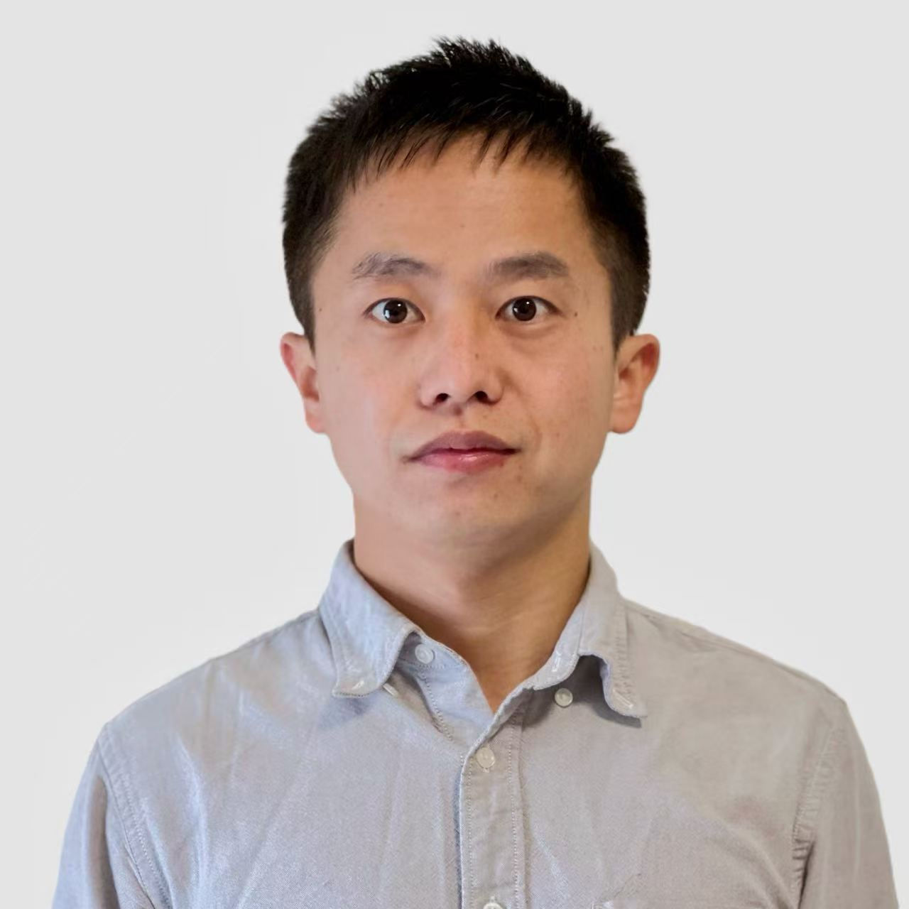

X2 -Hybrid Quantum System Lab (website under construction)
Ultra-low-loss hybrid phononic circuits
Our research focuses on designing ultra-low-loss phononic devices and understanding their fundamental physics. We aim to build photon-phonon integrated chips, analogous to electronic ICs, and heterogeneously integrate phononic devices with superconducting circuits for quantum sensing and applications. We also explore topological physics on phononic chip platforms.
Classical and quantum sensing
We will extend our high-performance phononic circuits toward various sensing applications. In particular, we aim to develop phononic interferometry and explore non-classical phononic states for enhanced sensing.
Quantum interconnect and memory
Leveraging our ultra-low-loss phononic membranes with long coherence times, we strongly couple them to optical cavities and superconducting circuits to build high-performance quantum microwave-to-optical transducers and memories for future quantum networking. We also investigate quantum acoustic dynamics.
Exploring New Physics
Our phononic devices are among the best sensors for force, mass, and so on. It is a very good plaform to explore unknown physics. For example, we can use it to explore fundamental formulation of optical force.
Selected Publications
Full list on Google Scholar and ORCID.

School of Physics, Zhejiang University
- PhD in physics, optics, phononics, superconducting circuits, or related field
- Experience with opto/electro-mechanical measurements, superconducting circuits, or nanofabrication
- Good passion on physics and experiments, open for collaboration
- Bachelor's or Master's degree in physics or engineering
- Background in physics, optics, or related
- Lab experience is a plus
- Currently enrolled in a Bachelor's or Master's programme, or gap year student
- Interest in optics, mechanics, and quantum physics or quantum information
Life about the Group

Get in Touch
Zhejiang University
Hangzhou, China